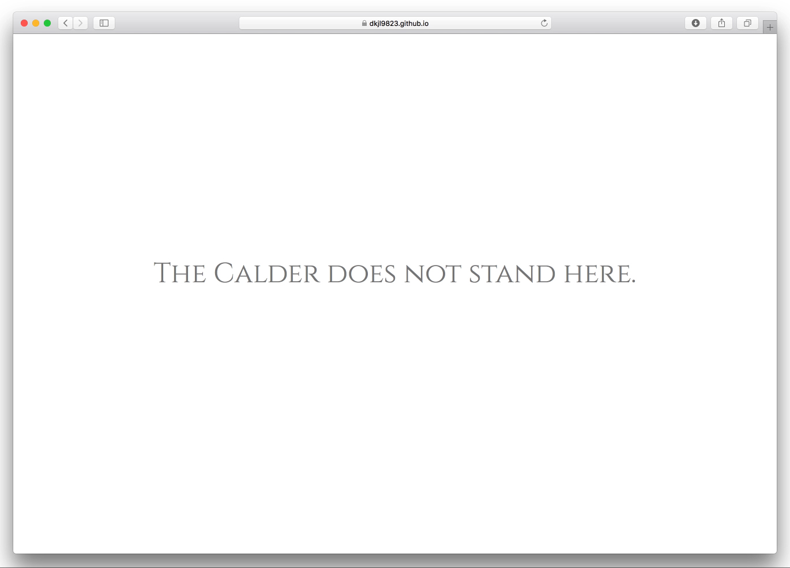
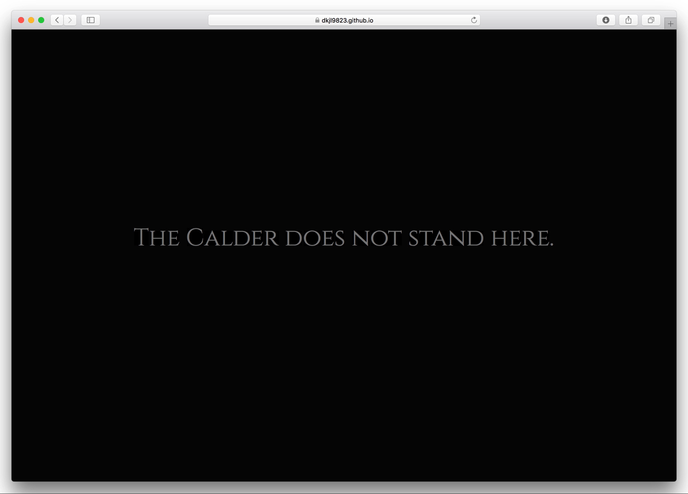
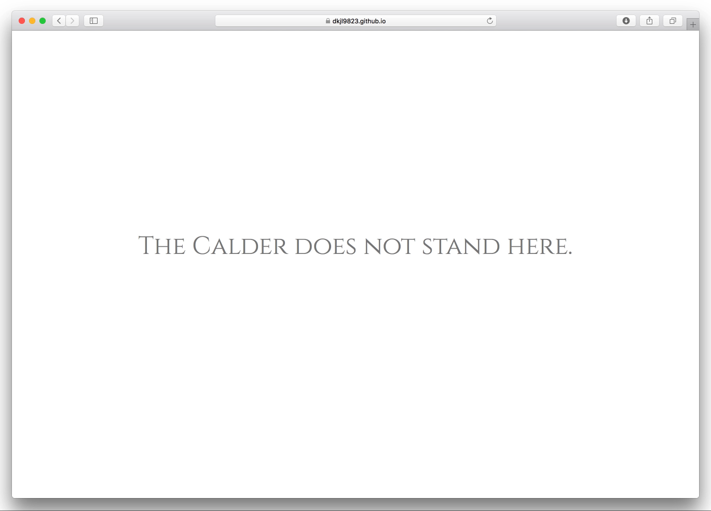
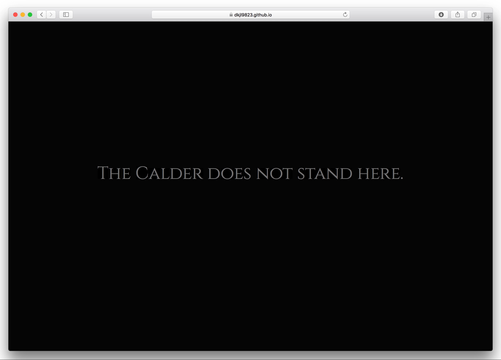
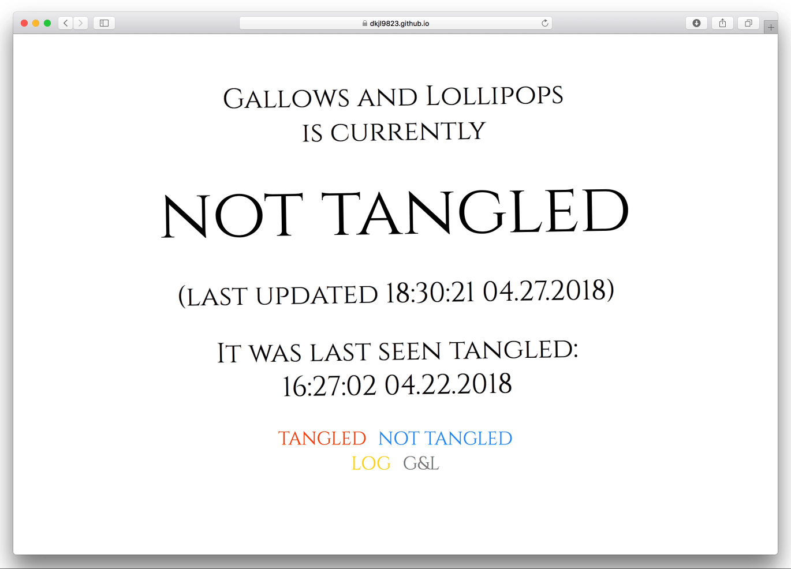
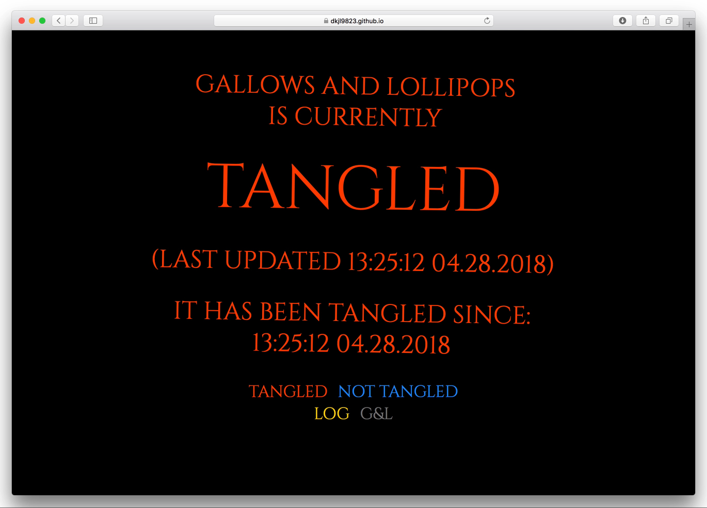

The Calder stands where we shall too.
Gallows and Lollipops is Yale's newest secret society, founded in the spring of 2018 to observe and record the tangled status of Alexander Calder's sculpture Gallows and Lollipops in the Hewitt Quadrangle, commonly known as Beinecke Plaza.
Like all secret societies, Gallows and Lollipops is highly selective and secretive, only allowing a very few number of new members in every year. New recruits are anonymously given an invitation to visit the tomb.
The tomb is a virtual space, only accessible when near the sculpture. It is a live log of the sculpture's state: either tangled or not tangled. Members of Gallows and Lollipops pride themselves in their tenacious and resolute efforts to keep an accurate record of the sculpture's tangled status.
Below are a collection of images, screenshots, and screen recordings documenting the society and its virtual tomb:
{kind=link}
Gallows and Lollipops, Alexander Calder, 1960. Hewitt Quadrangle.
{kind=link}
An invitation.
 



{kind=link}
{kind=link}
Landing page when not near Gallows and Lollipops.

{kind=link}
{kind=link}
Tomb entrance.

Entering the tomb.
 
{kind=link}
{kind=link}
Tangled and untangled states.

Updating tangled status.

Log page.

About page.